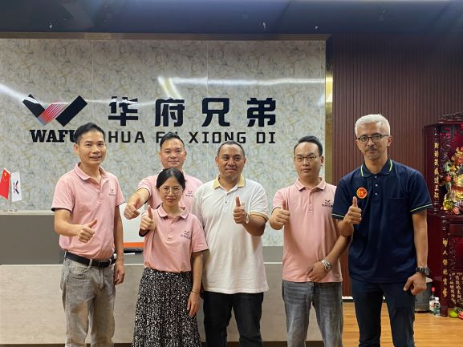

A WAFU voltou a estar no centro das atenções — várias delegações internacionais viajaram simultaneamente até à sede para experimentar e garantir o primeiro lote das recém-lançadas fechaduras remotas invisíveis. Com o argumento único de venda “segurança que não se vê”, a série invisível da WAFU continua a aquecer nos mercados internacionais, levando clientes a assinarem no local encomendas superiores a 3.000 unidades, acrescentando mais um capítulo marcante à fabricação inteligente da China.

1. Design “invisível”, mercado bem visível
- Instalação totalmente oculta: o corpo da fechadura fica completamente escondido dentro da porta, criando um visual minimalista que eleva instantaneamente a estética da casa; clientes brincam chamando‑a de “o caça furtivo das fechaduras”.
- Abertura remota com um clique: o comando RF padrão alcança 80 m, mesmo através de paredes e portas; clientes testaram a abertura entre três pisos de uma moradia e a reação foi entusiástica.
- Compatível com 99% das portas: seja portas europeias de madeira vintage, portas metálicas de cobre do Médio Oriente ou portas compósitas do Sudeste Asiático, a instalação é concluída em 3 minutos sem furos adicionais; clientes elogiaram: “Eficiência de tempo é tudo para nós.”
2. Experiência que vira encomenda — “amor à primeira vista em cinco segundos”
Para permitir que os clientes sentissem plenamente o encanto do produto, a equipa WAFU montou cinco estações interativas:
- Teste de silêncio: repetidas aberturas/fechos numa sala insonorizada, ruído ≤ 35 dB; clientes comentaram “mais silenciosa do que virar uma página”.
- Desafio anti‑arrombamento: foram fornecidos pés‑de‑cabra, chaves inglesas e outras ferramentas; após cinco minutos de tentativas, o corpo da fechadura permaneceu intacto, arrancando aplausos.
- Spray de água do mar: 168 horas contínuas de névoa salina simulando corrosão costeira; sem manchas de ferrugem, ideal para cidades portuárias.
- Temperatura extrema: após choque térmico de -40 °C a +85 °C, a fechadura continuou a responder em segundos; clientes brincaram “funcionaria até numa expedição polar”.
- Autonomia da bateria: 20 utilizações por dia, bateria dura 18 meses; aviso automático de bateria fraca e alimentação de emergência via power‑bank receberam elogios por “atenção total aos detalhes”.
3. Assinatura no local — “levar a linha de produção para casa”
Após a experiência, vários clientes solicitaram cláusulas adicionais:
- Prioridade de contentor completo: clientes aceitaram pagar o frete de contentor completo apenas para saltar a fila de produção e garantir stock para a época de Natal.
- Pós‑venda conjunto: a WAFU fornece 2% de peças sobressalentes gratuitas + formação técnica por vídeo; clientes comprometeram‑se a criar um centro de serviço local para garantir resposta em 24 horas.
- Co‑branding: clientes disponibilizam os seus próprios recursos de redes sociais e irão co‑produzir vídeos curtos com a equipa de marketing da WAFU, visando mais de 10 milhões de visualizações em três meses.
4. Voz do cliente — “Quero uma igual quando chegar a casa”
“Publiquei o vídeo de desbloqueio no grupo da minha família; em dez minutos todos perguntavam onde comprar. Este design invisível é incrível — mudou completamente a minha perceção sobre fechaduras.”
5. Perspetivas futuras — segurança invisível como padrão global
Com esta encomenda em massa confirmada, a WAFU lançou o programa “Um Milhão de Fechaduras Invisíveis Globais”: até ao final de 2026 serão adicionadas duas linhas totalmente automáticas, a capacidade aumentará 50% e três grandes centros de serviço serão construídos simultaneamente na Europa, América Latina e Médio Oriente. O objetivo é ultrapassar um milhão de vendas anuais de fechaduras remotas invisíveis dentro de três anos, permitindo que a “segurança invisível” proteja cada canto do mundo.